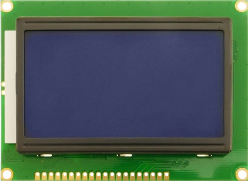

LCD Display 12864 #
Grafický LCD display QC12864 s rozlíšením 128x64 pixlov je možné riadiť pomocou paralelného alebo sériového SPI rozhrania.
{kind=link}

Obr. 21 Displej QC12864.#
Popis #
Označenie vývodov #
GND Ground
VCC Module power supply – 5 V
VO LCD Contrast
RS Register Select Pin
R/W Write/ Read selection
E Enable Signal
D0...D7 Data Bus
PSB Interface selection
0 for serial communication
1 for 8-bit parallel communication
NC Not Connected
RST Reset
Vout LCD Voltage Output (Vout < 7V)
BLA Power Supply for Backlight+
BLK Power Supply for Backlight-
Programovanie #
Zdrojový kód knižnice
1"""
2v 0.2.4
3
4lcd12864 is a FrameBuffer based MicroPython driver for the graphical
5LiquidCrystal LCD12864 display (also known as DFR0091).
6
7Connection: SPI
8Color: 1-bit monochrome
9Controllers: Esp8266, Esp32, RP2
10
11Project path: https://github.com/r2d2-arduino/micropython-lcd12864
12
13Author: Arthur Derkach
14MIT License
15
16LCD -> ESP8266
17--------------
18GND -> GND
19VCC -> 5V
20V0
21RS -> D8 GPIO15 CS/SS
22R/W -> D7 GPIO13 MOSI
23E -> D5 GPIO14 SCK
24DB0
25..
26DB7
27PSB -> GND
28NC
29RST -> 5V
30VOUT
31BLA -> 3.3V
32BLK -> GND
33
34"""
35
36from machine import Pin
37from time import sleep_us
38from framebuf import FrameBuffer, MONO_HMSB, MONO_HLSB
39
40#print(gc.mem_alloc())
41
42LCD_CLS = const(0x01)
43LCD_HOME = const(0x02)
44LCD_ADDR_INC = const(0x06)
45LCD_DISPLAY_ON = const(0x0C)
46LCD_DISPLAY_OFF = const(0x08)
47LCD_CURSOR_ON = const(0x0E)
48LCD_CURSOR_BLINK = const(0x0F)
49LCD_ENTRY_MODE = const(0x04) # +0..3
50LCD_SHIFT_CTRL = const(0x10) # : 10, 14, 18, 1C
51SET_CGRAM_ADDR = const(0x40) # +0..3F
52SET_DDRAM_ADDR = const(0x80) # +0..3F
53
54LCD_BASIC = const(0x30)
55LCD_EXTEND = const(0x34)
56LCD_GFXMODE = const(0x36)
57LCD_TXTMODE = const(0x34)
58LCD_STANDBY = const(0x01)
59LCD_ADDR = const(0x80)
60LCD_COMMAND = const(0xF8)
61LCD_DATA = const(0xFA)
62
63LCD_WIDTH = const(128)
64LCD_HEIGHT = const(64)
65
66
67class LCD12864_SPI( FrameBuffer ):
68 def __init__( self, spi, cs_pin, rst_pin = None, rotation = 0 ):
69 """ Constructor
70 Args
71 spi (object): SPI
72 cs (object): CS pin (Chip Select)
73 rotation (int): Display rotation 0 = 0 degrees, 1 = 180 degrees
74 """
75 self.spi = spi
76 self.cs = Pin( cs_pin, Pin.OUT, value = 0 )
77
78 if (rst_pin):
79 Pin( rst_pin, Pin.OUT, value = 1 )
80 # Other properties
81 self.height = LCD_HEIGHT
82 self.width = LCD_WIDTH
83
84 self._rotation = rotation
85 self.font = None
86 self.text_wrap = False
87
88 #order of bites in buffer depending of screen position
89 fb_format = MONO_HLSB
90 if (rotation == 1):
91 fb_format = MONO_HMSB
92
93 # Buffer initialization
94 self.buffer = bytearray( LCD_WIDTH * LCD_HEIGHT // 8 )
95 super().__init__( self.buffer, self.width, self.height, fb_format )
96
97 self.init()
98
99 def init(self):
100 """ Initialize the LCD controler """
101 self.cs.value( 1 )
102
103 self.write_command( LCD_BASIC ) # basic instruction set
104 #self.write_command( LCD_EXTEND )
105 self.write_command( LCD_CLS ) #clear
106 sleep_us(50) #wait for clearing
107
108 self.write_command( LCD_ADDR_INC )
109 self.write_command( LCD_DISPLAY_ON ) # display on
110
111 self.cs.value( 0 )
112
113
114 def clear( self ):
115 """ Clear display """
116 self.cs.value( 1 )
117 self.write_command( LCD_BASIC )
118 self.write_command( LCD_CLS ) #clear
119 sleep_us(50)
120
121 self.cs.value( 0 )
122
123 def write_command( self, cmd ):
124 """ Sending a command to the display
125 Args
126 cmd (int): Command number, example: 0x2E
127 """
128 self.spi.write( bytearray( [ LCD_COMMAND, cmd & 0xF0, (cmd & 0x0F) << 4] ) )
129
130 def write_data( self, data ):
131 """ Sending a data to the display
132 Args
133 cmd (int): Command number, example: 0x2E
134 """
135 self.spi.write( bytearray( [ LCD_DATA, data & 0xF0, (data & 0x0F) << 4] ) )
136
137 def set_font(self, font):
138 """ Set font for text
139 Args
140 font (module): Font module generated by font_to_py.py
141 """
142 self.font = font
143
144 def set_text_wrap(self, on = True):
145 """ Set text wrapping """
146 if on:
147 self.text_wrap = True
148 else:
149 self.text_wrap = False
150
151 def draw_text(self, text, x, y, color = 1):
152 """ Draw text on display
153 Args
154 x (int) : Start X position
155 y (int) : Start Y position
156 """
157 x_start = x
158 screen_height = self.height
159 screen_width = self.width
160
161 font = self.font
162 wrap = self.text_wrap
163
164 if font == None:
165 print("Font not set")
166 return False
167
168 for char in text:
169 glyph = font.get_ch(char)
170 glyph_height = glyph[1]
171 glyph_width = glyph[2]
172
173 if char == " ": # double size for space
174 x += glyph_width
175
176 if wrap and (x + glyph_width > screen_width): # End of row
177 x = x_start
178 y += glyph_height
179
180 #if y + glyph_height > screen_height: # End of screen
181 # break
182
183 self.draw_bitmap(glyph, x, y, color)
184 x += glyph_width
185
186 @micropython.viper
187 def draw_bitmap(self, bitmap, x:int, y:int, color:int = 1):
188 """ Draw a bitmap on display
189 Args
190 bitmap (bytes): Bitmap data
191 x (int): Start X position
192 y (int): Start Y position
193 color (int): Color 0 or 1
194 """
195 fb = FrameBuffer( bytearray(bitmap[0]), bitmap[2], bitmap[1], MONO_HLSB )
196 self.blit( fb, x, y, 1 - color )
197
198 @micropython.viper
199 def show( self ):
200 ''' Send FrameBuffer to lcd '''
201 #Set text mode
202 self.cs.value( 1 )
203 self.write_command( LCD_GFXMODE )
204
205 buffsize = LCD_WIDTH * LCD_HEIGHT // 8
206 rotation = int(self._rotation)
207 buffer = ptr8( self.buffer )
208 row_buffer = bytearray( 16 * 3 )
209 row_ptr = ptr8(row_buffer)
210
211 for y in range(64):
212 x_addr = LCD_ADDR
213 y_addr = LCD_ADDR + y
214
215 if y > 31:
216 x_addr += 8
217 y_addr -= 32
218
219 #Set addres position
220 self.spi.write( bytearray( [ LCD_COMMAND, y_addr & 0xF0, (y_addr & 0x0F) << 4,
221 LCD_COMMAND, x_addr & 0xF0, (x_addr & 0x0F) << 4 ] ) )
222 y_offset = y * 16
223 #Send buffer to display
224 for x in range(16):
225 pos = y_offset + x
226 if ( rotation == 1 ):
227 pos = buffsize - 1 - pos
228
229 data = buffer[ pos ]
230
231 x_offset = x * 3
232 row_ptr[ x_offset ] = LCD_DATA
233 row_ptr[ x_offset + 1 ] = data & 0xF0
234 row_ptr[ x_offset + 2 ] = (data & 0x0F) << 4
235
236 self.spi.write( row_buffer )
237
238 self.cs.value( 0 )
API Funkcie
clear( self ): - Clear display
set_font(self, font): - Set font for text
set_text_wrap(self, on = True): - Set text wrapping
draw_text(self, text, x, y, color = 1): - Draw text on display
draw_bitmap(self, bitmap, x, y, color = 1): - Draw a bitmap on display
show( self ): - Send frameBuffer to lcd
other framebuffer functions -
see more on https://docs.micropython.org/en/latest/library/framebuf.html#module-framebuf
Demo program
from pyb import SPI
from lib.lcd12864_spi import *
spi = SPI(2, SPI.CONTROLLER, baudrate=100000, polarity=1, phase=1, crc=None)
lcd = LCD12864_SPI( spi = spi, cs_pin = 'D6', rst_pin = 'D2', rotation = 1 )
lcd.text( "123.456", 50, 25, 1 )
lcd.rect( 0, 0, 128, 64, 1 )
lcd.rect( 3, 3, 128-6, 64-6, 1 )
lcd.line(0,0,20,30,1)
lcd.ellipse(30,30,15,15,1)
lcd.show()